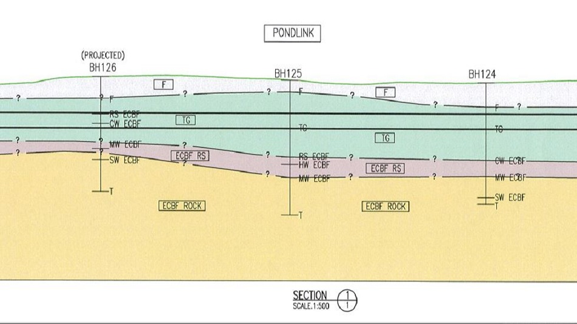

Into Software Development!
To turn over a new leaf
As a Civil Engineer, I am a Civil Engineer, not a software developer. Or at least that’s what I thought. This is the story of how I followed my passion of becoming a software developer.
The beginning
It all began on a fine thursday afternoon. It was 2pm, the sky was blue, the streets were empty and I was out on my daily walk, breathing in the fresh, covid-free air.
I love my walks. I find walking to be one of the rocks in my life. Walks center me and bring me back to my base. They’re a time where I can breathe, relax, and consider, and evaluate my thoughts and feelings. And on this calm day, birds chirping atop their tall trees, a day where I would typically have felt at peace, energised, and happy, I was instead feeling distracted and dissatisfied; something in my life wasn’t as it should be.
Employment nowadays, is a fundamental and time intensive part of life. A few years ago, I fostered a very close bond with a beautiful puppy (he wasn’t a puppy but all dogs are puppies in my eyes) named Louie. Louie’s dad was the to-be CEO of the engineering consultancy I have been employed by for the last few years. I also tutored his daughter in maths but a dog’s approval is a massive credibility statement. I enjoy my work in civil engineering as I love to problem solve. But I also had to acknowledge this feeling in my gut that was drawing me towards software development. And in the clarity of the fresh air on this wonderful day, I realised as silly as it sounds, that I didn’t have to have a software development qualification or be a software developer by trade to know how to develop software. Anyone can do it! And so I decided that it was time to turn a new leaf, and begin my unexpected journey into the digital world.
My journey started from the bottom. After deciding upon my new pursuit, I quickly realised how little I knew about where to start without re-enrolling in a computer science qualification at university. I needed wisdom from the inside, and so I called upon my already qualified friends for some insight - what do I need to do to make myself a competent software developer?
The three people I contacted all offered some excellent suggestions and with a bit of thought and extra research, I have constructed a pathway to my goal of becoming a software developer. This blog will detail the steps I have taken and the steps I am yet to take on my unexpected journey.
The very first step
In my eyes, the main fundamental to becoming a software developer (software dev) is learning your first language. Languages are the interaction between the computer and the individual and there are languages serving all types of purposes and utilities. Some are more common than others, notable names being Python, JavaScript, C (and it’s descendants C++, C# etc…), HTML, CSS, Java, PHP, and others. My friend recommended I begin learning JavaScript and he directed me to a brilliant and free learning platform - FreeCodeCamp.org. He said I should complete their JavaScript Algorithms and Data Structures Certification, a 300hour course which took me approximately 1 month, spending between 1-6 hours per day working through their interactive courses.
FreeCodeCamp.org was the perfect place to start for me because their JavaScript program eases the user into the development environment, providing the user with clear instructions and explanations of all the topics, each introduced at a very natural progression rate. The platform gives the user a series of tasks, explanations, and examples and then adjacent to this information, there is a built in integrated development environment (IDE) in which you can script your solutions and run them against the pre-existing test queries.
I feel that this course is the perfect place to begin because it provides the user with their first tier of credibility; the user can now interact with the software development world. The user has their first tool in their tool kit to start building their profile and portfolio as a software developer, even being able to complete coding exams is a great feeling! The additional benefit of selecting JavaScript as a first language is that it can be used for full-stack development.
- a brief interlude as ‘full-stack’ was a term whose meaning eluded me for a while. In development, there is front-end development, which involves the creation and development of the client side interface or user experience. Conversely, there is back-end development which communicates front-end information and inputs to databases where data is organised and stored. Full-stack development is when the developer develops both front-end and back-end systems. -
Congratulations! You can now write code. If you enjoyed your experience with FreeCodeCamp.org, you can also buy their cool hoodies to support their platform and also look cool with some hip swag.
LinkedIn and CV and cover letters
linkedin badjes not letting my current firm know other soft skills
Communities
..................
Creating my portfolio
HTML CSS AND JAVASCRIPT and filezilla
Publishing my website
digital ocean and godaddy
learning new languages and practice codewars
moving from javascript to python (projects etc)
Git, github and Agile
learning repositories etc
Thinking bigger - ideas and app development
My journey started........
Back-end SQL and projects
My journey started........
An additional task was the design of a structural support system required to support all of the pipes, services, and ducts running through an existing box tunnel prior to the complete mortar backfilling of the tunnel. The final task was to prepare an instrumentation and monitoring set out for the tunnelling works.